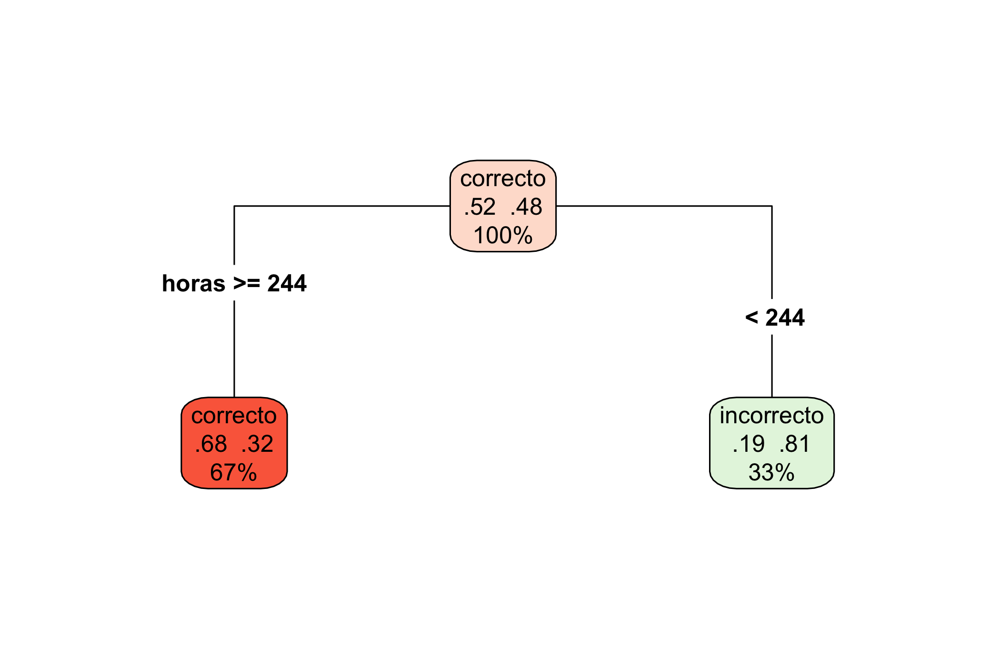
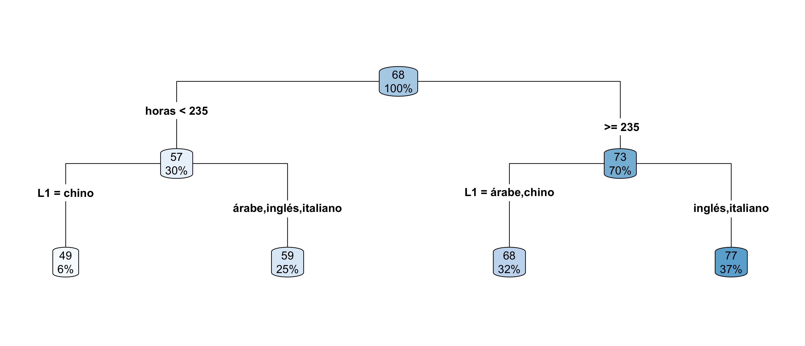

Paso 0 · Instalar los paquetes (solo una vez)
install.packages(c("tidyverse", "rpart", "rpart.plot",
"pheatmap", "plotly", "DT"))Máster en ELE · Universitat de Barcelona · 23 de octubre de 2026
De los datos del aula a las pruebas estadísticas, paso a paso y en directo.
Adrián Cabedo Nebot · Universitat de València Coordinación: Dra. Carolina Figueras
1R y estadística descriptivaObjetos, tablas, media, mediana, desviación típica y resúmenes por grupos. 2VisualizaciónGramática de gráficos, motion charts, gráficos interactivos y mapas de calor. 3InferenciaIntervalos de confianza, valor p, potencia, prueba t, Wilcoxon y correlación. 4Chi cuadrado y ANOVATablas de contingencia, residuos, F, Tukey e interacciones. 5Corpus y modelosLog-likelihood, log-ratio, palabras clave y regresión lineal y logística. 🌳Árboles de decisiónGini, el mejor corte, poda, sobreajuste, matriz de confusión y árboles de regresión.
Pulsa una tarjeta para saltar a la sección. Tecla M: menú · Esc: vista general · C: pizarra.
La estadística no sustituye a la interpretación lingüística: la apoya y la hace replicable. (Pasa el ratón o pulsa cada pregunta.)
Cada bloque de código lleva un Paso numerado y un botón para copiarlo.
Pégalo en tu script de RStudio y ejecútalo con Ctrl/Cmd + Enter.
Comprueba que tu salida o tu gráfico coincide con el de la diapositiva.
Si no coincide, revisa el paso anterior: el código es acumulativo.
Una diapositiva interactiva con los mismos datos para entender qué significa ese resultado.
Movemos deslizadores, simulamos y vemos qué cambia.
Las cintas de colores de la esquina superior derecha indican en qué fase estamos.
Opción A · RStudio en el aula
datos/ dentro del proyectoOpción B · posit.cloud (sin instalar nada)
ele.csv, errores.csv y frecuencias.csv a una carpeta datos/Datos simulados con fines docentes, con patrones plausibles en ELE. Filtra y ordena la tabla.
| Variable | Qué mide | Tipo |
|---|---|---|
L1 |
Lengua materna (árabe, chino, inglés, italiano) | Categórica nominal |
nivel |
Nivel MCER (A2–C1) | Categórica ordinal |
estancia |
¿Ha vivido en un país hispanohablante? | Categórica binaria |
horas |
Horas de instrucción | Numérica continua |
nota_dele |
Nota en una prueba tipo DELE (0–100) | Numérica continua |
err_ser_estar |
Errores de ser/estar en una redacción | Numérica discreta (recuento) |
subjuntivo |
Uso del subjuntivo en un contexto obligatorio | Categórica binaria |
Sesión 1 · 60 minutos
¿Cómo es un aprendiente «típico»… y cuánto se parecen entre sí?
RStudio y posit.cloudObjetos y vectoresCargar un .csvMedia, mediana, modaDE y cuartilesResúmenes por grupos
→ moda, frecuencias, barras
→ mediana, barras
→ mediana, boxplot
→ media, DE, histograma
El tipo de variable decide qué estadístico, qué gráfico y qué prueba usamos. Lo veremos en el árbol para elegir la prueba de la sesión 3.
R es el lenguaje: el motor
RStudio es el entorno: el salpicadero
Ctrl + Enter (Cmd + Enter en Mac) ejecuta la línea del script.
<- significa «guarda en». Todo lo que va tras # es un comentario: R no lo ejecuta.
Rows: 240
Columns: 8
$ id <chr> "A001", "A002", "A003", "A004", "A005", "A006", "A007", …
$ L1 <chr> "inglés", "inglés", "inglés", "italiano", "inglés", "chi…
$ nivel <fct> A2, B2, A2, A2, B2, B2, A2, B2, B1, B1, C1, B2, B1, C1, …
$ estancia <chr> "sí", "no", "no", "no", "sí", "sí", "sí", "no", "no", "s…
$ horas <dbl> 247, 174, 55, 103, 364, 354, 129, 303, 277, 269, 392, 31…
$ nota_dele <dbl> 78, 57, 49, 64, 75, 69, 48, 62, 54, 75, 82, 61, 78, 76, …
$ err_ser_estar <dbl> 4, 6, 6, 2, 4, 0, 5, 3, 3, 5, 3, 1, 3, 5, 1, 3, 2, 10, 4…
$ subjuntivo <chr> "correcto", "incorrecto", "incorrecto", "incorrecto", "c…También: View(ele) (como una hoja de cálculo), head(ele), nrow(ele), names(ele). Con ele$nota_dele seleccionamos una columna.
Notas de 5 aprendientes: 55, 62, 70, 71, 92
| Medida | Cálculo | Resultado |
|---|---|---|
| Media | (55 + 62 + 70 + 71 + 92) / 5 | 70 |
| Mediana | valor central de los datos ordenados | 70 |
| Moda | valor más repetido | — (no hay) |
| Rango | 92 − 55 | 37 |
Media → numéricas simétricas · Mediana → asimétricas u ordinales · Moda → nominales (L1)
summary() y frecuencias horas nota_dele err_ser_estar
Min. : 29.0 Min. : 32.00 Min. : 0.000
1st Qu.:221.8 1st Qu.: 60.00 1st Qu.: 2.000
Median :290.0 Median : 68.00 Median : 3.000
Mean :283.7 Mean : 68.08 Mean : 3.175
3rd Qu.:348.2 3rd Qu.: 77.00 3rd Qu.: 4.000
Max. :549.0 Max. :100.00 Max. :10.000 dplyrPaso 10 · group_by() + summarise()
# A tibble: 4 × 4
L1 n media de
<chr> <int> <dbl> <dbl>
1 chino 49 61.6 13.2
2 inglés 73 69.7 10.3
3 italiano 52 76.3 11.4
4 árabe 66 64.6 12.8|> es la tubería: «y después…».
Paso 11 · filter() · select() · mutate()
# A tibble: 4 × 4
id L1 nota_dele aprobado
<chr> <chr> <dbl> <lgl>
1 A014 italiano 76 TRUE
2 A017 chino 75 TRUE
3 A020 italiano 90 TRUE
4 A029 inglés 79 TRUE count(L1, subjuntivo) y después group_by(L1) |> mutate(pct = 100 * n / sum(n))
Sesión 2 · 60 minutos
¿Qué nos cuentan los datos antes de hacer ninguna prueba?
AnscombeGramática de gráficosHistogramas, cajas y violinesMotion chartsGráficos interactivosMapas de calor
Paso 1 · Histograma
Pasa el ratón por un punto · arrastra para hacer zoom · doble clic para volver · clic en la leyenda para ocultar una L1.
Paso 1 · Medias por nivel y L1
# A tibble: 4 × 5
nivel L1 horas nota n
<fct> <chr> <dbl> <dbl> <int>
1 A2 chino 137. 45.2 8
2 A2 inglés 181. 61.4 16
3 A2 italiano 131. 55.8 5
4 A2 árabe 172. 55.8 13Paso 2 · Una burbuja por L1; el «tiempo» es el nivel
motion <- plot_ly(resumen, x = ~horas, y = ~nota,
size = ~n, color = ~L1, frame = ~nivel, ids = ~L1,
type = "scatter", mode = "markers",
colors = c("#1D3557", "#E63946", "#2A9D8F", "#F4A261"),
sizes = c(20, 70), marker = list(sizemode = "diameter")) |>
layout(xaxis = list(range = c(80, 420), title = "Horas medias"),
yaxis = list(range = c(40, 85), title = "Nota media")) |>
animation_opts(frame = 1300, transition = 900, redraw = FALSE)
motionlabs().
ggsave("fig.png", width = 8, height = 5, dpi = 300)
Soluciones de la práctica 2
ggplot(ele, aes(horas)) + geom_histogram(binwidth = 25)
ggplot(ele, aes(L1, err_ser_estar)) + geom_boxplot()
p2 <- ggplot(ele, aes(horas, nota_dele, colour = nivel)) + geom_point()
ggplotly(p2)
ele |> group_by(nivel, L1) |>
summarise(h = mean(horas), e = mean(err_ser_estar), n = n()) |>
plot_ly(x = ~h, y = ~e, size = ~n, color = ~L1, frame = ~nivel, ids = ~L1,
type = "scatter", mode = "markers")
p3 <- ggplot(errores, aes(tipo, L1, fill = n)) + geom_tile()
ggsave("mapa_calor.png", p3, width = 8, height = 4)Sesión 3 · 60 minutos
¿Influye la estancia en el extranjero en la nota? ¿Y cómo lo sabemos con solo 240 personas?
Distribución normalDistribución muestralIntervalos de confianzaValor p y potenciaÁrbol para elegir la pruebat · Wilcoxon · correlación
La nota media de mis 240 aprendientes es 68,1.
La nota media de los aprendientes está, con un 95 % de confianza, entre 66,4 y 69,7.
Shapiro-Wilk normality test
data: ele$nota_dele
W = 0.99408, p-value = 0.4669
Shapiro-Wilk normality test
data: ele$err_ser_estar
W = 0.93937, p-value = 2.083e-08Paso 1 · El IC del 95 % a mano
media inf sup
68.07917 66.44759 69.71074 La estancia no influye en la nota.
Quienes han hecho una estancia obtienen otra nota.
El valor p no es la probabilidad de que H₀ sea cierta, ni mide la importancia del efecto.
| H₀ es verdadera | H₀ es falsa | |
|---|---|---|
| Rechazo H₀ | Error tipo I (α) «falsa alarma» | ✔ Potencia (1 − β) |
| No rechazo H₀ | ✔ Acierto | Error tipo II (β) «se me escapa» |
| Medida | Prueba | Pequeño | Mediano | Grande |
|---|---|---|---|---|
| d de Cohen | t | 0,2 | 0,5 | 0,8 |
| r | correlación | 0,1 | 0,3 | 0,5 |
| V de Cramér | χ² | 0,1 | 0,3 | 0,5 |
| η² | ANOVA | 0,01 | 0,06 | 0,14 |
Paso 1 · Descriptivos por grupo
# A tibble: 2 × 4
estancia n media de
<chr> <int> <dbl> <dbl>
1 no 140 65.9 12.4
2 sí 100 71.1 13.0Welch Two Sample t-test
data: nota_dele by estancia
t = -3.0772, df = 207.3, p-value = 0.002372
alternative hypothesis: true difference in means between group no and group sí is not equal to 0
95 percent confidence interval:
-8.440092 -1.848479
sample estimates:
mean in group no mean in group sí
65.93571 71.08
Pasa el ratón por las partes resaltadas de la salida o pulsa el botón para recorrerla.
Paso 3 · Pretest y postest
[1] 0.00527797
Wilcoxon rank sum test with continuity correction
data: err_ser_estar by estancia
W = 7500.5, p-value = 0.3398
alternative hypothesis: true location shift is not equal to 0
Pearson's product-moment correlation
data: ele$horas and ele$nota_dele
t = 11.105, df = 238, p-value < 2.2e-16
alternative hypothesis: true correlation is not equal to 0
95 percent confidence interval:
0.4941355 0.6618754
sample estimates:
cor
0.5842101 Para datos no normales u ordinales: method = "spearman".
Soluciones de la práctica 3
qqnorm(ele$horas); qqline(ele$horas); shapiro.test(ele$horas)
t.test(ele$nota_dele)$conf.int
dos <- ele |> filter(L1 %in% c("inglés", "chino"))
t.test(nota_dele ~ L1, data = dos)
with(dos, d_cohen(nota_dele[L1 == "inglés"], nota_dele[L1 == "chino"]))
cor.test(ele$horas, ele$err_ser_estar, method = "spearman")Sesión 4 · 60 minutos
¿Depende el uso del subjuntivo de la estancia? ¿Difiere la nota según la lengua materna?
Tablas de contingenciaObservadas y esperadasResiduosV de CramérANOVA y FTukeyInteracciones
Paso 2 · Esperadas y contribuciones
correcto incorrecto
no 72.3 67.7
sí 51.7 48.3
correcto incorrecto
no 1.48 1.58
sí 2.07 2.21Paso 4 · V de Cramér
[1] 0.1747623[1] 0.008698842Fisher: cuando alguna frecuencia esperada es menor que 5.
Paso 5 · L1 × subjuntivo
\[F = \frac{\text{variación entre grupos}}{\text{variación dentro de los grupos}}\]
Df Sum Sq Mean Sq F value Pr(>F)
L1 3 6567 2188.9 15.57 2.84e-09 ***
Residuals 236 33181 140.6
---
Signif. codes: 0 '***' 0.001 '**' 0.01 '*' 0.05 '.' 0.1 ' ' 1 Tukey multiple comparisons of means
95% family-wise confidence level
Fit: aov(formula = nota_dele ~ L1, data = ele)
$L1
diff lwr upr p adj
chino-árabe -3.044527 -8.8299337 2.74088 0.5247310
inglés-árabe 5.034869 -0.1762258 10.24596 0.0624970
italiano-árabe 11.690559 6.0017374 17.37938 0.0000015
inglés-chino 8.079396 2.4134110 13.74538 0.0015803
italiano-chino 14.735086 8.6268482 20.84332 0.0000000
italiano-inglés 6.655690 1.0883611 12.22302 0.0118235La L1 explica un 17 % de la variación de la nota.
Df Sum Sq Mean Sq F value Pr(>F)
L1 3 6567 2188.9 16.260 1.26e-09 ***
estancia 1 1597 1596.8 11.861 0.00068 ***
L1:estancia 3 351 117.0 0.869 0.45790
Residuals 232 31233 134.6
---
Signif. codes: 0 '***' 0.001 '**' 0.01 '*' 0.05 '.' 0.1 ' ' 1
Kruskal-Wallis rank sum test
data: err_ser_estar by L1
Kruskal-Wallis chi-squared = 22.722, df = 3, p-value = 4.615e-05| Pregunta | Prueba | Función |
|---|---|---|
| 2 categóricas | Chi cuadrado / Fisher | chisq.test(), fisher.test() |
| Numérica × ≥ 3 grupos | ANOVA + Tukey | aov(), TukeyHSD() |
| Ídem, sin normalidad | Kruskal-Wallis | kruskal.test() |
Sesión 5 · 60 minutos
¿Qué palabras delatan a un aprendiente? ¿Qué predice que use bien el subjuntivo?
Frecuencias normalizadasLog-likelihoodLog-ratioSimple MathsMapa de palabras claveRegresión lineal y logística
Paso 1 · Tamaños de los corpus y frecuencias normalizadas
# A tibble: 5 × 5
palabra aprend nativo pmw_aprend pmw_nativo
<chr> <dbl> <dbl> <dbl> <dbl>
1 muy 620 410 4133. 2050
2 cosa 410 250 2733. 1250
3 bueno 380 300 2533. 1500
4 pues 90 380 600 1900
5 o sea 25 190 167. 950Corpus de distinto tamaño → comparar frecuencias por millón de palabras (pmw).
| Aprendientes | Nativos | Total | |
|---|---|---|---|
| Observadas | 90 | 380 | 470 |
| Tamaño del corpus | 150 000 | 200 000 | 350 000 |
| Esperadas | 470 × 150/350 = 201 | 470 × 200/350 = 269 | 470 |
\[G^2 = 2 \sum O \ln\frac{O}{E} = 2 \times [90 \ln(90/201) + 380 \ln(380/269)] \approx 118\]
G² > 3,84 → p < 0,05 · G² > 15,13 → p < 0,0001. Con frecuencias bajas es más fiable que χ².
Paso 2 · Dos funciones y una tabla
ll <- function(a, b, N1, N2) {
E1 <- N1 * (a + b) / (N1 + N2); E2 <- N2 * (a + b) / (N1 + N2)
2 * (a * log(a / E1) + b * log(b / E2))
}
frec <- frec |> mutate(LL = ll(aprend, nativo, N_aprend, N_nativo),
LR = log2(pmw_aprend / pmw_nativo))
frec |> arrange(desc(abs(LR))) |>
transmute(palabra, LL = round(LL, 1), LR = round(LR, 2),
sig = ifelse(LL > 15.13, "***", ifelse(LL > 3.84, "*", "")))# A tibble: 10 × 4
palabra LL LR sig
<chr> <dbl> <dbl> <chr>
1 o sea 100. -2.51 "***"
2 pues 119. -1.66 "***"
3 es que 50.7 -1.39 "***"
4 cosa 98.8 1.13 "***"
5 muy 125. 1.01 "***"
6 bueno 46.5 0.76 "***"
7 sin embargo 6.3 0.64 "*"
8 hacer 45.2 0.62 "***"
9 tener 22.6 0.45 "***"
10 además 3.4 0.32 "" \[SM = \frac{pmw_{aprend} + n}{pmw_{nativo} + n} \qquad (n = 1 \text{ por defecto})\]
Paso 3 · Simple Maths con dos valores de n
# A tibble: 4 × 3
palabra SM_1 SM_1000
<chr> <dbl> <dbl>
1 cosa 2.19 1.66
2 muy 2.02 1.68
3 bueno 1.69 1.41
4 sin embargo 1.55 1.13quantedaPara tus propios corpus
library(quanteda); library(quanteda.textstats)
corp <- corpus(readtext::readtext("corpus/*.txt", docvarsfrom = "filenames"))
dfm_g <- tokens(corp, remove_punct = TRUE) |> dfm() |>
dfm_group(groups = docvar1) # aprendientes / nativos
kw <- textstat_keyness(dfm_g, target = "aprendientes", measure = "lr")
head(kw, 20) # G² y valor p
quanteda.textplots::textplot_keyness(kw)Cómo informar: pues aparece significativamente menos en el corpus de aprendientes (LL = 118,7, p < 0,0001; log-ratio = -1,66): lo usan unas 3,2 veces menos.
Paso 4 · lm() con dos predictores
Estimate Std. Error t value Pr(>|t|)
(Intercept) 43.957 2.148 20.462 0.000
horas 0.078 0.007 11.185 0.000
estanciasí 4.495 1.346 3.339 0.001[1] 0.3708927Cada hora de instrucción suma 0,078 puntos (unos 7,8 cada 100 horas). La estancia suma 4,5 puntos a igualdad de horas. El modelo explica el 37 % de la variación.
La recta (gris) predice probabilidades < 0 o > 1; la curva en S (roja) se queda entre 0 y 1.
Paso 5 · glm() con family = binomial
Estimate Std. Error z value Pr(>|z|)
(Intercept) -4.316 0.673 -6.416 0.000
horas 0.013 0.002 6.485 0.000
estanciasí 0.841 0.309 2.725 0.006
L1chino 0.298 0.444 0.670 0.503
L1inglés 0.389 0.397 0.981 0.327
L1italiano 0.797 0.435 1.831 0.067(Intercept) horas estanciasí L1chino L1inglés L1italiano
0.01 1.01 2.32 1.35 1.48 2.22 OR > 1 → aumenta la probabilidad de acierto. La estancia multiplica las odds de acierto por 2,3.
Paso 6 · Curvas por grupo
Sesión 5 · Segunda parte
¿Qué perfil de aprendiente usa bien el subjuntivo? Que los datos hagan las preguntas.
Anatomía de un árbolImpureza de GiniEl mejor corteCrecer y podarSobreajusteMatriz de confusiónÁrboles de regresión
Antes elegimos la prueba con un árbol hecho por nosotros. Ahora será R quien construya el árbol a partir de los datos.

Cada hoja predice una clase y una proporción.
rpart(…, method = “class”)
Cada hoja predice una media.
rpart(…) (método «anova»)
El paquete rpart (recursive partitioning) hace las dos cosas. rpart.plot los dibuja.
Un árbol muy profundo memoriza los datos (sobreajuste). Hay que podarlo y evaluarlo con datos nuevos.
n= 240
node), split, n, loss, yval, (yprob)
* denotes terminal node
1) root 240 116 correcto (0.5166667 0.4833333)
2) horas>=243.5 161 52 correcto (0.6770186 0.3229814)
4) nivel=C1 62 11 correcto (0.8225806 0.1774194) *
5) nivel=A2,B1,B2 99 41 correcto (0.5858586 0.4141414)
10) horas>=351.5 19 3 correcto (0.8421053 0.1578947) *
11) horas< 351.5 80 38 correcto (0.5250000 0.4750000)
22) horas< 256.5 8 1 correcto (0.8750000 0.1250000) *
23) horas>=256.5 72 35 incorrecto (0.4861111 0.5138889)
46) L1=inglés,italiano 33 14 correcto (0.5757576 0.4242424) *
47) L1=árabe,chino 39 16 incorrecto (0.4102564 0.5897436)
94) horas< 293.5 14 6 correcto (0.5714286 0.4285714) *
95) horas>=293.5 25 8 incorrecto (0.3200000 0.6800000) *
3) horas< 243.5 79 15 incorrecto (0.1898734 0.8101266) *print(arbol)n= 240
node), split, n, loss, yval, (yprob)
* denotes terminal node
1) root 240 116 correcto (0.5166667 0.4833333)
2) horas>=243.5 161 52 correcto (0.6770186 0.3229814)
4) nivel=C1 62 11 correcto (0.8225806 0.1774194) *
5) nivel=A2,B1,B2 99 41 correcto (0.5858586 0.4141414)
10) horas>=351.5 19 3 correcto (0.8421053 0.1578947)
11) horas< 351.5 80 38 correcto (0.5250000 0.4750000)
22) horas< 256.5 8 1 correcto (0.8750000 0.1250000)
23) horas>=256.5 72 35 incorrecto (0.4861111 0.5138889)
46) L1=inglés,italiano 33 14 correcto (0.5757576 0.4242424)
47) L1=árabe,chino 39 16 incorrecto (0.4102564 0.5897436)
94) horas< 293.5 14 6 correcto (0.5714286 0.4285714)
95) horas>=293.5 25 8 incorrecto (0.3200000 0.6800000) *
3) horas< 243.5 79 15 incorrecto (0.1898734 0.8101266) *
Pasa el ratón por las líneas resaltadas o pulsa el botón para recorrerlas.
type = 4: etiqueta las dos ramas · extra = 104: probabilidades de cada clase y % de casos en cada nodo.
subjuntivo cover
0.12 when horas is 244 to 257 & nivel is A2 or B1 or B2 3%
0.16 when horas >= 352 & nivel is A2 or B1 or B2 8%
0.18 when horas >= 244 & nivel is C1 26%
0.42 when horas is 257 to 352 & nivel is A2 or B1 or B2 & L1 is inglés or italiano 14%
0.43 when horas is 257 to 294 & nivel is A2 or B1 or B2 & L1 is árabe or chino 6%
0.68 when horas is 294 to 352 & nivel is A2 or B1 or B2 & L1 is árabe or chino 10%
0.81 when horas < 244 33%Paso 5 · Predecir y comparar con la realidad
predicho
real correcto incorrecto
correcto 101 23
incorrecto 35 81[1] 0.7583333[1] 0.5166667Pasamos de un 52 % a un 76 %. Pero lo hemos medido con los datos con los que aprendió: es como poner el examen con las preguntas resueltas en clase.
Paso 6 · Un árbol sin freno (cp = 0) y su validación cruzada
Classification tree:
rpart(formula = subjuntivo ~ horas + estancia + L1 + nivel, data = ele,
method = "class", control = rpart.control(cp = 0, minsplit = 6))
Variables actually used in tree construction:
[1] estancia horas L1 nivel
Root node error: 116/240 = 0.48333
n= 240
CP nsplit rel error xerror xstd
1 0.4224138 0 1.00000 1.00000 0.066738
2 0.0215517 1 0.57759 0.58621 0.060180
3 0.0129310 3 0.53448 0.66379 0.062341
4 0.0114943 11 0.41379 0.68103 0.062757
5 0.0086207 14 0.37931 0.68103 0.062757
6 0.0071839 19 0.33621 0.71552 0.063522
7 0.0043103 25 0.29310 0.75862 0.064358
8 0.0034483 31 0.26724 0.84483 0.065644
9 0.0000000 36 0.25000 0.87069 0.065933plotcp()Paso 7 · El gráfico de la poda
Eje Y: error de validación cruzada (xerror). La línea horizontal es el mínimo + 1 error estándar.
Paso 8 · prune() con el cp elegido
tabla_cp <- arbol_total$cptable
minimo <- which.min(tabla_cp[, "xerror"])
umbral <- tabla_cp[minimo, "xerror"] +
tabla_cp[minimo, "xstd"]
fila_1ee <- which(tabla_cp[, "xerror"] <= umbral)[1]
arbol_podado <- prune(arbol_total,
cp = tabla_cp[fila_1ee, "CP"])
rpart.plot(arbol_podado, type = 4,
extra = 104, box.palette = "RdGn")
Paso 9 · Separar entrenamiento (70 %) y prueba (30 %)
set.seed(2026)
idx <- sample(nrow(ele), size = 0.7 * nrow(ele))
entreno <- ele[idx, ]
prueba <- ele[-idx, ]
arbol_e <- rpart(subjuntivo ~ horas + estancia + L1 + nivel, data = entreno,
method = "class", control = rpart.control(cp = 0, minsplit = 6))
cp_opt <- arbol_e$cptable[which.min(arbol_e$cptable[, "xerror"]), "CP"]
arbol_p <- prune(arbol_e, cp = cp_opt)
acierto <- function(m, d) mean(predict(m, d, type = "class") == d$subjuntivo)
c(grande_entreno = acierto(arbol_e, entreno), grande_prueba = acierto(arbol_e, prueba),
podado_entreno = acierto(arbol_p, entreno), podado_prueba = acierto(arbol_p, prueba)) |> round(3)grande_entreno grande_prueba podado_entreno podado_prueba
0.881 0.639 0.833 0.708 Paso 10 · Importancia de las variables
La importancia suma lo que cada variable reduce la impureza, también como sustituta (surrogate) en los cortes en que no fue elegida.

Logística para cuantificar y contrastar efectos · árbol para explorar perfiles y comunicar reglas. Usarlos juntos es una buena práctica.
Un bosque promedia cientos de árboles hechos con remuestreos: es más estable y suele predecir mejor, pero ya no se puede leer como un único árbol.
Se ajustó un árbol de clasificación (paquete rpart, índice de Gini) para predecir el uso correcto del subjuntivo a partir de las horas de instrucción, la estancia, la L1 y el nivel. La primera división, y la más informativa, fue la de las horas de instrucción: con 243,5 horas o más, el 67,7 % de los aprendientes usó correctamente el subjuntivo, frente al 19,0 % con menos horas. El árbol se podó mediante validación cruzada (10 particiones). En una muestra de prueba independiente (30 %), el árbol podado acertó el 70,8 % de los casos, frente al 63,9 % del árbol sin podar.
Siempre: variables candidatas, criterio de división, cómo se podó, exactitud con datos de prueba y comparación con la clase mayoritaria.
subjuntivo por estancia en la fórmula y en la función acierto().
Soluciones
set.seed(2026)
a_est <- rpart(estancia ~ horas + nota_dele + L1 + nivel, data = ele,
method = "class", control = rpart.control(cp = 0, minsplit = 6))
rpart.plot(a_est, type = 4, extra = 104)
printcp(a_est); plotcp(a_est)
a_est_p <- prune(a_est, cp = a_est$cptable[which.min(a_est$cptable[, "xerror"]), "CP"])
rpart.plot(a_est_p, type = 4, extra = 104)
a_err <- rpart(err_ser_estar ~ horas + L1 + nivel + estancia, data = ele, cp = 0.02)
rpart.plot(a_err, type = 4)Cierre · mini-investigación
Elegir la prueba, ejecutarla, comprobar los supuestos e informar con rigor.
Volver al árbol de pruebasCómo informarErrores frecuentesPráctica final
| Pregunta | Método | Función |
|---|---|---|
| ¿Palabra más frecuente en un corpus que en otro? | Log-likelihood + log-ratio | ll(), log2() |
| ¿Cuánto más frecuente es? | Log-ratio / Simple Maths | sm() |
| ¿Qué predice una variable numérica? | Regresión lineal | lm() |
| ¿Qué predice un sí/no? | Regresión logística | glm(family = binomial) |
| ¿Qué perfiles hay? ¿Reglas fáciles de explicar? | Árbol de decisión | rpart(), rpart.plot() |
Para las pruebas de contraste, vuelve al árbol interactivo de la sesión 3.
Los aprendientes que habían realizado una estancia en un país hispanohablante obtuvieron una nota media más alta (M = 71,1; DE = 13,0) que quienes no la habían realizado (M = 65,9; DE = 12,4), t(207,3) = 3,08, p = 0,002, d = 0,41.
lme4).
Soluciones de la práctica 5
frec |> mutate(LL = ll(aprend, nativo, 150000, 200000),
LR = log2((aprend / 150000) / (nativo / 200000))) |> arrange(desc(LL))
frec |> mutate(SM1 = sm(pmw_aprend, pmw_nativo, 1),
SM100 = sm(pmw_aprend, pmw_nativo, 100)) |> arrange(desc(SM1))
summary(lm(nota_dele ~ horas + L1, data = ele))
exp(coef(glm(subj_ok ~ nivel + estancia, data = ele, family = binomial)))Gracias
Adrián Cabedo Nebot · Universitat de València
adrian.cabedo@uv.esVolver al inicio
Estadística con R para ELE · Máster en ELE · Universitat de Barcelona